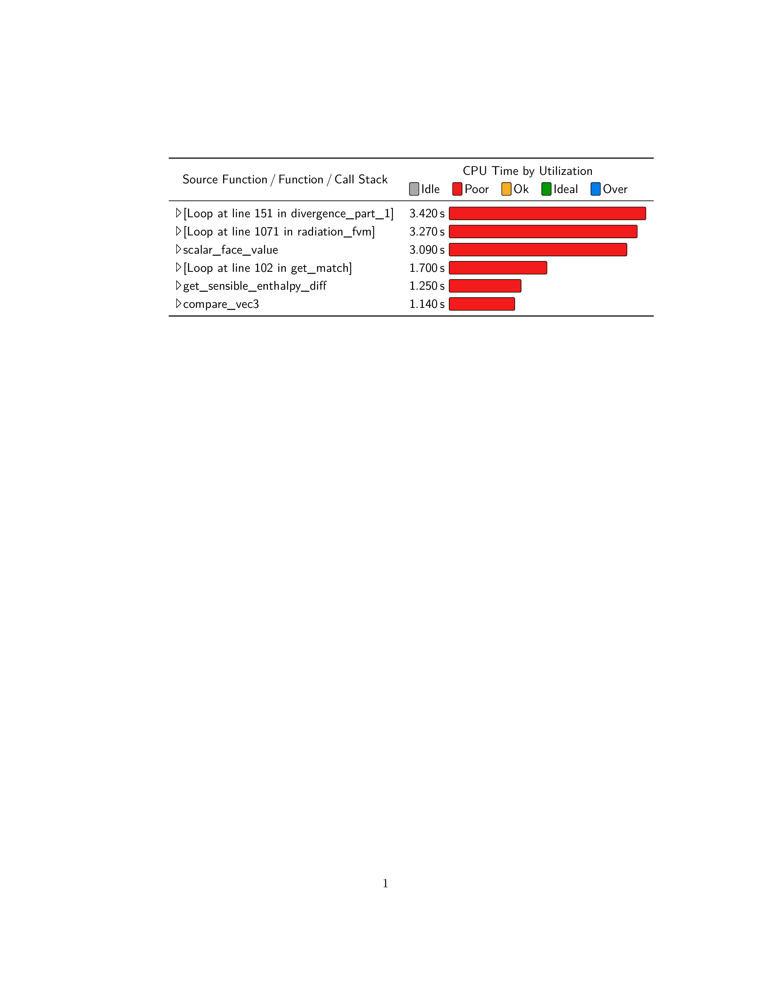

\documentclass{article}
\usepackage[T1]{fontenc}
\usepackage{lmodern}
\usepackage{url}
\DeclareUrlCommand\function{\urlstyle{sf}}
\usepackage{xcolor}
\usepackage{tikz}
\usepackage{booktabs}
\usepackage{array}
\usepackage{multirow}
\usepackage{siunitx}
\definecolor{chart Idle}{gray}{.6}
\definecolor{chart Poor}{RGB}{242,28,28}
\definecolor{chart Ok}{RGB}{248,172,37}
\definecolor{chart Ideal}{RGB}{1,151,0}
\definecolor{chart Over}{RGB}{0,125,234}
\newdimen\tempdim
\newcommand*{\Triangle}{%
\settoheight{\tempdim}{L}%
\tikz[x=\tempdim, y=\tempdim]\draw(0,0) -- (.5,.5) -- (0,1) --cycle;%
}
\newcommand*{\ChartLegend}[1]{%
\ifdim\lastkern=1sp %
\hspace{1em}%
\fi
\ChartBox{0.75em}{#1}%
\,#1%
\kern-1sp\kern1sp\ignorespaces
}
\newcommand*{\ChartBox}[2]{%
\begingroup
\settoheight{\tempdim}{L}%
\edef\tempheight{\the\tempdim}%
\settodepth{\tempdim}{g}%
\edef\tempdepth{\the\tempdim}%
\tikz[
baseline=0pt,
inner sep=0pt,
]
\node[
fill={chart #2},
draw,
rounded corners=1pt,
anchor=base,
]{%
\vphantom{g\"A}%
\pgfmathsetlength{\tempdim}{#1}%
\kern\tempdim\relax
};%
\endgroup
}
\begin{document}
\sffamily
\renewcommand*{\arraystretch}{1.2}
\newcommand*{\chart}[2]{%
#1 & \ChartBox{55mm/3.420*#1}{#2}%
}
\noindent
\begin{tabular}{>{\Triangle\,}lS[mode=text,detect-family,table-format=1.3]@{\,s~}l}
\toprule
\multicolumn{1}{c}{%
\multirow{2}{*}{Source Function\,/\,Function\,/\,Call Stack}%
}&
\multicolumn{2}{c}{CPU Time by Utilization}\\
\multicolumn{1}{c}{}& \multicolumn{2}{l}{%
\ChartLegend{Idle}
\ChartLegend{Poor}
\ChartLegend{Ok}
\ChartLegend{Ideal}
\ChartLegend{Over}
}\\
\midrule
\relax[Loop at line 151 in \function{divergence_part_1}] &
\chart{3.420}{Poor} \\
\relax[Loop at line 1071 in \function{radiation_fvm}] &
\chart{3.270}{Poor} \\
\function{scalar_face_value} &
\chart{3.090}{Poor} \\
\relax[Loop at line 102 in \function{get_match}] &
\chart{1.700}{Poor} \\
\function{get_sensible_enthalpy_diff} &
\chart{1.250}{Poor} \\
\function{compare_vec3} &
\chart{1.140}{Poor} \\
\bottomrule
\end{tabular}
\end{document}